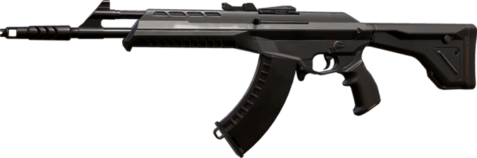
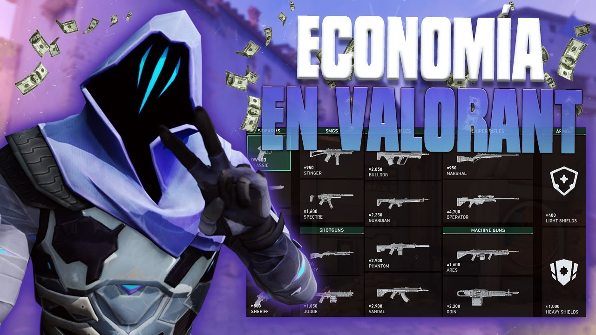
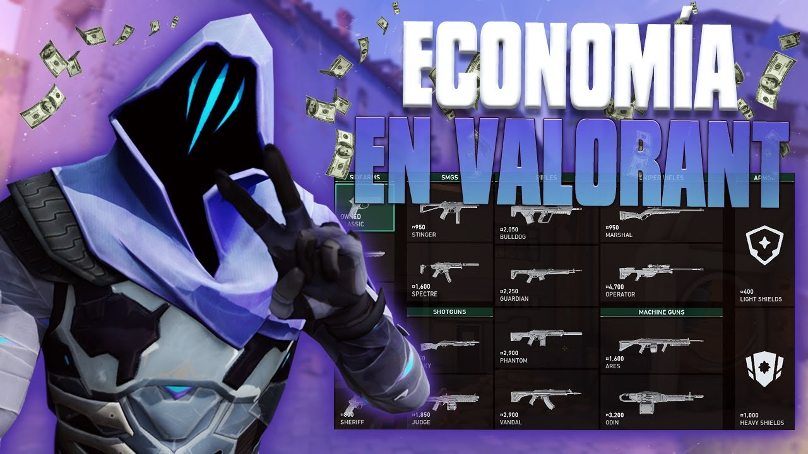
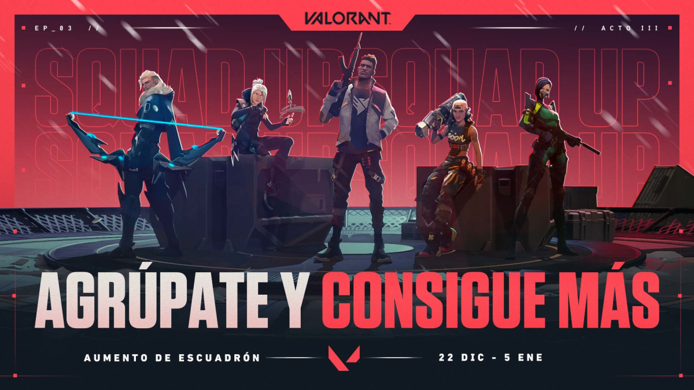
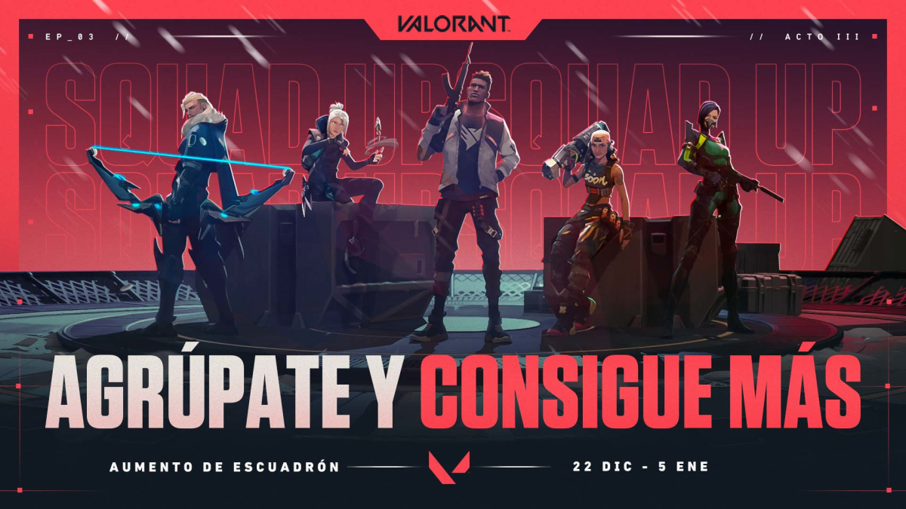

Mecánicas del Juego
🎯 Disparo Táctico: Precisión y Control de Retroceso
En Valorant, cada bala cuenta.
No es un shooter donde puedas correr y disparar sin consecuencias.
La precisión lo es todo: detenerse antes de disparar mejora tu puntería, y controlar el retroceso de cada arma puede marcar la diferencia entre ganar o perder un duelo. Además, apuntar a la cabeza es clave, ya que la mayoría de las armas eliminan con solo uno o dos tiros bien colocados. Si dominas el spray control y los tap shots, tendrás una gran ventaja sobre tus oponentes.

No es un shooter donde puedas correr y disparar sin consecuencias.
La precisión lo es todo: detenerse antes de disparar mejora tu puntería, y controlar el retroceso de cada arma puede marcar la diferencia entre ganar o perder un duelo. Además, apuntar a la cabeza es clave, ya que la mayoría de las armas eliminan con solo uno o dos tiros bien colocados. Si dominas el spray control y los tap shots, tendrás una gran ventaja sobre tus oponentes.
💰 Economía: Comprar de Forma Inteligente
No se trata solo de disparar, sino también de administrar recursos. Cada ronda te da créditos dependiendo de tu desempeño y el de tu equipo. Saber cuándo comprar armas poderosas y cuándo ahorrar (eco round) puede cambiar el rumbo de la partida. ¿Prefieres una Vandal o una Phantom? ¿Compras habilidades o guardas para la próxima ronda? Tomar decisiones estratégicas en la compra es igual de importante que tu puntería. 
No se trata solo de disparar, sino también de administrar recursos. Cada ronda te da créditos dependiendo de tu desempeño y el de tu equipo. Saber cuándo comprar armas poderosas y cuándo ahorrar (eco round) puede cambiar el rumbo de la partida. ¿Prefieres una Vandal o una Phantom? ¿Compras habilidades o guardas para la próxima ronda? Tomar decisiones estratégicas en la compra es igual de importante que tu puntería. 
🌀 Habilidades Únicas: El Factor Diferencial
A diferencia de otros shooters tácticos, en Valorant cada agente tiene un conjunto de habilidades únicas que pueden inclinar la balanza en cualquier enfrentamiento. Desde flashes y smokes hasta muros, drones y curaciones, las habilidades pueden usarse para ganar duelos o preparar jugadas estratégicas. Una granada de Raze puede eliminar a varios enemigos, mientras que un muro de Sage puede cortar completamente una entrada. Aprender a combinar disparos con habilidades es esencial para destacar.
A diferencia de otros shooters tácticos, en Valorant cada agente tiene un conjunto de habilidades únicas que pueden inclinar la balanza en cualquier enfrentamiento. Desde flashes y smokes hasta muros, drones y curaciones, las habilidades pueden usarse para ganar duelos o preparar jugadas estratégicas. Una granada de Raze puede eliminar a varios enemigos, mientras que un muro de Sage puede cortar completamente una entrada. Aprender a combinar disparos con habilidades es esencial para destacar.
🗣 Trabajo en Equipo: La Clave del Éxito
No importa qué tan bueno seas individualmente; Valorant es un juego en equipo. La comunicación es esencial: avisar la posición del enemigo, coordinar ataques o defender juntos puede hacer la diferencia entre ganar o perder. Un equipo bien organizado con estrategias y roles definidos siempre tendrá ventaja sobre un grupo de jugadores descoordinados. Usar el chat de voz o pings para dar información precisa puede mejorar enormemente tu rendimiento. 
No importa qué tan bueno seas individualmente; Valorant es un juego en equipo. La comunicación es esencial: avisar la posición del enemigo, coordinar ataques o defender juntos puede hacer la diferencia entre ganar o perder. Un equipo bien organizado con estrategias y roles definidos siempre tendrá ventaja sobre un grupo de jugadores descoordinados. Usar el chat de voz o pings para dar información precisa puede mejorar enormemente tu rendimiento. 